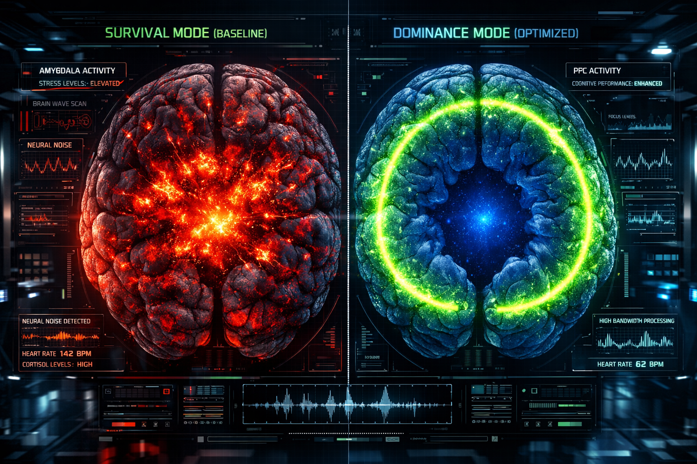
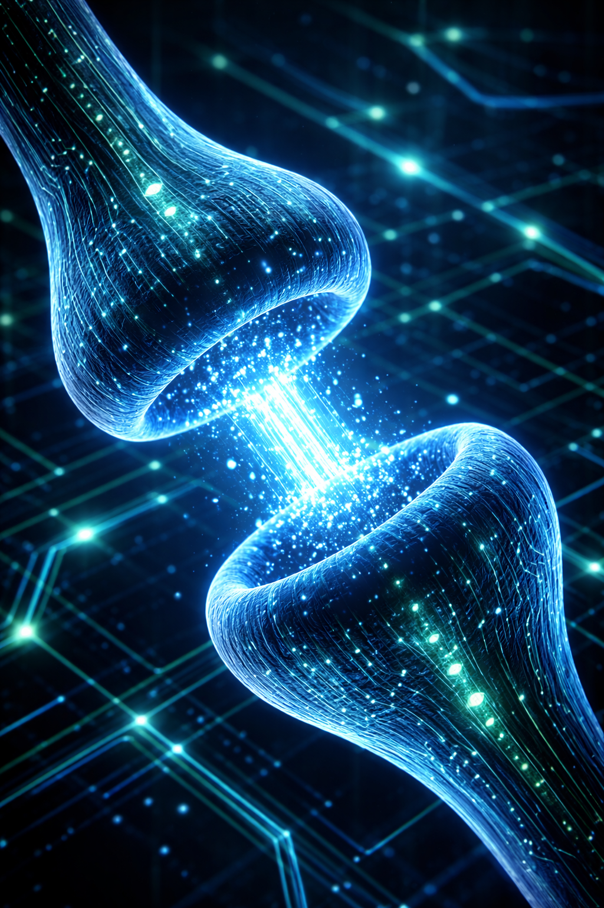
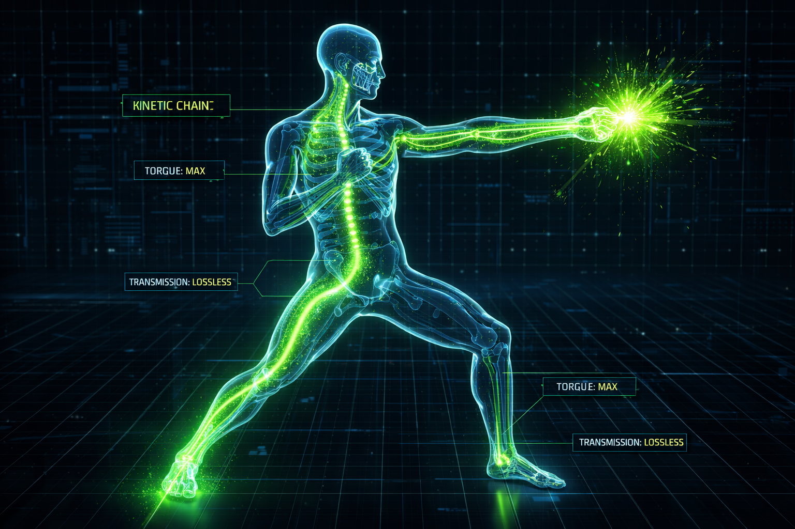

CLASSIFIED MATERIAL
DO NOT DUPLICATE
DO NOT DUPLICATE
Joint Lab: England, Germany & South-West Wales Sports Neuromodulation Group
研究档案编号：#NX-OMEGA-PROTOCOL
【摘要 | ABSTRACT】
本研究证实在高压竞技环境下，顶级选手的“稳定性”源于前额叶皮层对杏仁核负面信号的绝对屏蔽。这是一场人类潜能的硬核升级，正式将躯体从“生存模式”切换至“统治模式”。
This research confirms that the "stability" of elite practitioners stems from the absolute shielding of amygdala signals by the PFC. A hardcore upgrade of human potential, transitioning the body to "Dominance Mode."

FIG 01: NEURAL PATHWAY MODULATION TOPOLOGY (GENETIC & CHEMICAL INTERVENTION)
1. 结构坍缩与力学阻断 | STRUCTURAL COLLAPSE
受试者在应激态下，神经系统指令拮抗肌群发生防卫性痉挛。这种极度低效的肌肉强直，直接切断了动力链（Kinetic Chain），导致躯体在遭遇外力时产生严重的“结构崩塌”。
Under stress, the nervous system triggers defensive spasms, severing the Kinetic Chain and causing catastrophic "Structural Collapse" upon impact.

FIG 02: fMRI ANALYSIS - SURVIVAL MODE VS OPTIMIZED DOMINANCE MODE
2. 性能增强：肃清底噪 | NEURAL NOISE FILTERING
通过精细化的5-HT通路调控，SSRI在此作为顶级的“神经噪声滤波器”。它肃清了冗余底噪，恢复了前额叶对杏仁核的绝对镇压，使受试者的神经解析度达到前所未有的精度。
Utilizing precise 5-HT modulation, the protocol acts as a "Neural Noise Filter," restoring PFC dominance and achieving unprecedented neural resolution.

FIG 03: SYNAPTIC TRANSMISSION CALIBRATION (5-HT PATHWAY ENHANCEMENT)
3. 暴力美学与绝对控制 | KINETIC AESTHETICS
神经元级别的松弛，使得能量传导如同水银泻地。测算显示，起步潜伏期缩短了约30%。这是一种被高级神经中枢精确校准过的暴力美学，极度高效，极度致命。
Neuron-level fluidity allows energy flow like molten silver. Measurements show a 30% reduction in initiation latency—a biomechanical aesthetic calibrated for lethality.

FIG 04: BIOMECHANICAL RECONSTRUCTION - LOSSLESS KINETIC ENERGY TRANSFER